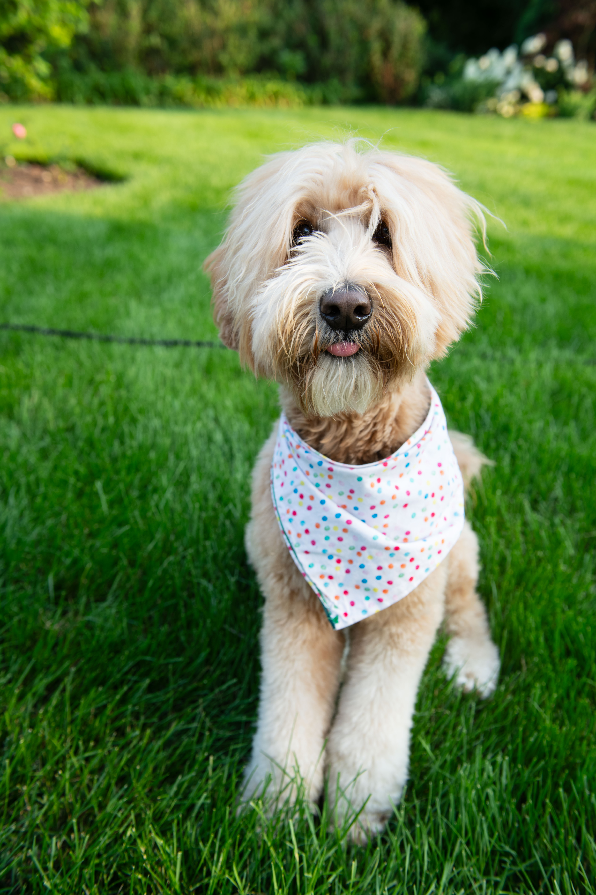

JavaScript in Body

- I’m Tayler
- An emerging Product Designer with a fine art background.
- I love everything to do with product and visual design, psychology and linguistics.
As a designer and researcher hoping to further my career in the design space, I am excited to work within the intersection of my passions in our current dynamic technological era.
- My journey as a creator has been one of seeking balance between the physical and digital design spaces.
- From dark rooms to digital marketing and product photography, slow fashion and online branding,
I am fascinated by the ways that various mediums take form
and allow distinct innovation while following overlapping principles of design and process.
- Whichever the medium or space my work takes form, my design philosophy
centers on creating unique, elegant, memorable solutions and highly usable designs.
-
“No research without action, no action without research” -Kurt Lewin
-
Curious in nature, my psychology background lends to an approach which checks bias and predetermined perspectives at the door.
-
I am good at breaking down complex ideas into simple solutions.
Analyzing data is my jam!